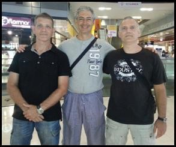
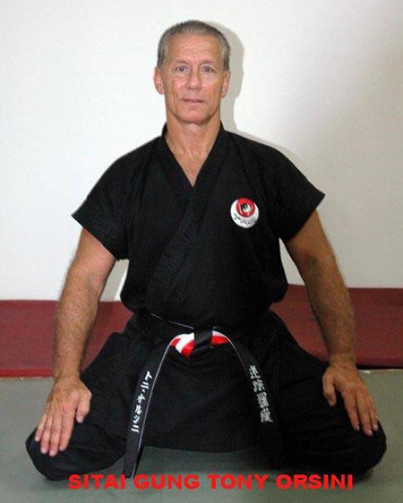
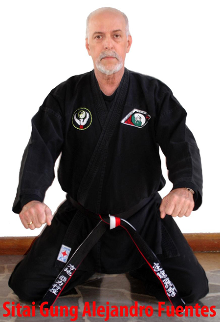
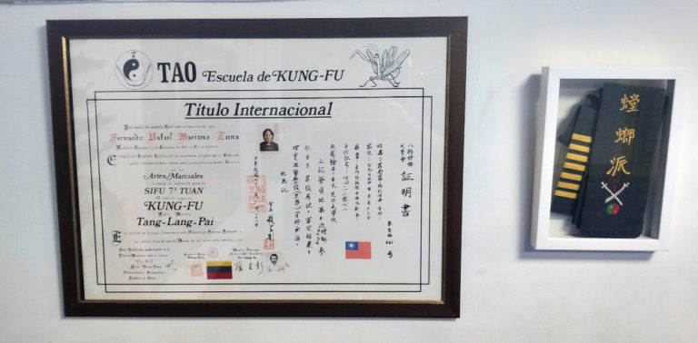

ORIGENES Y CONEXIONES
En 1985 se intentó reunir escuelas y maestros de kung-fu en España para crear una federación nacional. Sin embargo, el proyecto no fue aprobado por el CSD, lo que llevó a la dispersión hacia distintas federaciones. De esta fragmentación nació el Dpto. de Wushu como disciplina de la Federación de Judo y D.A. (1986).
Entre los alumnos del Maestro Ferran en la escuela “Tang-Lang-King” se encontraban Damián Torrescusa, Manuel Gayobart y Jaume Calvet, quienes obtuvieron el CN por la FEK en 1984 y 1985. En 1986, estos tres maestros fundaron el Kwoon DAMAJA.
Con el tiempo, cada uno tomó su propio camino. El Sifu Manuel Gayobart, junto a varios de sus alumnos, fundó en 1994 la Asociación Deportiva de Artes Marciales TA-MO.
Expresar que todas las Artes Marciales son buenas, y nos pueden aportar muchas cosas, si bien algunas se pueden adecuar mejor a nuestros objetivos o a nuestras aptitudes. Teniendo en cuenta que con cada Maestro puede variar la forma de practicarlas (aún tratándose del mismo arte marcial y del mismo estilo).
Debemos aprender a valorar, por encima de todo, el buen Arte en la ejecución y en la bondad en las personas, evitando las absurdas polémicas.
RESUMEN DE LOS ORIGENES DE LA ESCUELA
Después de ver el esquema y sus contenidos podemos afirmar que estamos representados por el G.M. Raymond Kwong que se encuentra dentro de los linajes de los siguientes estilos respectivamente:
1.Estilo TaiJi Tang Lang del G.M. Sue Yuan Chang, El representante más importante de esta escuela fue el G.M. Zhao Zhu Xi (Chui Chuk Kai) (1900-1991). El maestro Chiu tuvo de sus alumnos más destacados al G.M. Raymond K. Wong.
2.Estilo Mizong-Luohan del G.M. Yeh Yu Ting el siglo XX hasta su muerte en 1962. Varios de sus alumnos, entre ellos maestro Chi-Hung Marr, el Maestro Johnny Lee y el G.M.Raymond Wong, emigraron a América del Norte y han continuado enseñando este estilo en todos los EE.UU. y Canadá.
3.Estilo Hung-Gar del G.M.Hung Hei Goon al final se truncan en dos ramas siendo la primera la del G.M. Lam Sai Wing que junto al G.M. Lam Cho juntan dos estilos dentro del Hung-Gar: el Mok Gar, y el Lau Gar.
Los dos hijos del G.M. Lam Cho, Lam Chun Fai y Lam Chun Sing son los máximos representantes de su linaje, pero a parte de sus hijos existen un gran número de discípulos por todo el mundo. El GM Y.C. Wong es uno de sus más prestigiosos alumnos siendo el GM Raymond Wong su hermano menor como discípulo en el linaje del GM Lam Cho.
4.Estilo Bak-Hok-Pai de los G.M. Chu Chi Yui y Wong Ling Hoi que dieron origen a la rama de nuestra generación que se inicia con el Maestro Meng Siu Chung al que le sigue el Maestro rector Kwong Poon Fu y le continua el G.M. Chu Huen Tak (fundador de la Escuela Tak en Venezuela).
Conexiones de nuestra Escuela con sus Origenes
Mizong Lohan & Tai-Chi Mantis en Venezuela
Gracias al avance en las tecnologías de la información (TIC) pudimos constatar la similitud que existía entre nuestro sistema y al que nos hemos referido aquí como Escuela Venezolana. Ratificada por la información facilitada por el maestro Fernando Mariano Luna que nos sitúa su linaje en Venezuela como alumno del maestro Tony Orsini y José Guzmán (entre otros)
El primer puente de unión se trazó a través del sibok Atilio Fini(alumno del maestro Tony Orsini), el cual acogió nuestro contacto con entusiasmo, estableciendo una relación de amistad y colaboración mutua.
El maestro Atilio Fini ha sido alumno del sitai gung Tony Orsiny (8º Tuan), del que fue su asistente. También tiene contacto con el G.M. Johnny Lee (del linaje de Mizong Lohan). Y es presidente de la Asociación “Mizong Lohan de Venezuela”.
  Estos otorgaron al maestro Manuel Gayobart el C.N. 4º Tuan de la Asociación Mizong Lohan de Venezuela, así como recíprocamente se otorgó a ellos sendos certificados de honor en reconocimiento a su gran labor y trayectoria en el arte del kung-fu.
Diploma de la Asociación Mizong Lohan Venezuela firmada por Sitai Tony Orsini, Sitai Gung Alejandro Fuentes, presidente Sibok Atilio J. Filip L.
Entrega del maestro Sifu Ferran del diploma y faja para custodia de la Asociación TA-MO
El sifu Enrique Parras después de ponerse en contacto directamente con el G.M. Raymond K. Wong , establece una relación de amistad y colaboración mutua.
Es nuestro deseo rendir un homenaje a todos estos grandes maestros que han hecho posible que sus conocimientos hayan llegado hasta nosotros y que nos han recibido con tan afectuosa acogida.
Y, asimismo, reconocer todo el trabajo de investigación, estudio, elaboración y contacto que se ha realizado para llevar a cabo este trabajo, y que se sigue llevando a cabo en pro de perfeccionar nuestro arte.
Raymond K. Wong
Durante el año 2012 se instaron diplomas de certificación y agradecimiento de alto rango para los G.M. Tony Orsini y G.M. Alejandro Fuentes, por todas sus trayectorias, fruto de ello las fotografías que se ilustran a continuación, realizadas en Caracas -Venezuela en la Escuela de Los Cortijos presidida por G.M. Alejandro Fuentes.
Mas tarde y debido también a la proximidad , para con nosotros entablamos contactos con Alejandro Fuentes C.N. también de la Escuela Tao de Caracas-Venezuela.
Sifu Enrique Parras recibiendo un reconocimiento a su trayectoria y dedicación.
Reconocimiento al Maestro Ferrán por parte de la Asociación TA-MO a la entrega y trabajo realizado en el campo de las Artes Marciales concretamente en el Kung-fu
Mi padre Cecilio Gayobart forjó estos escudos